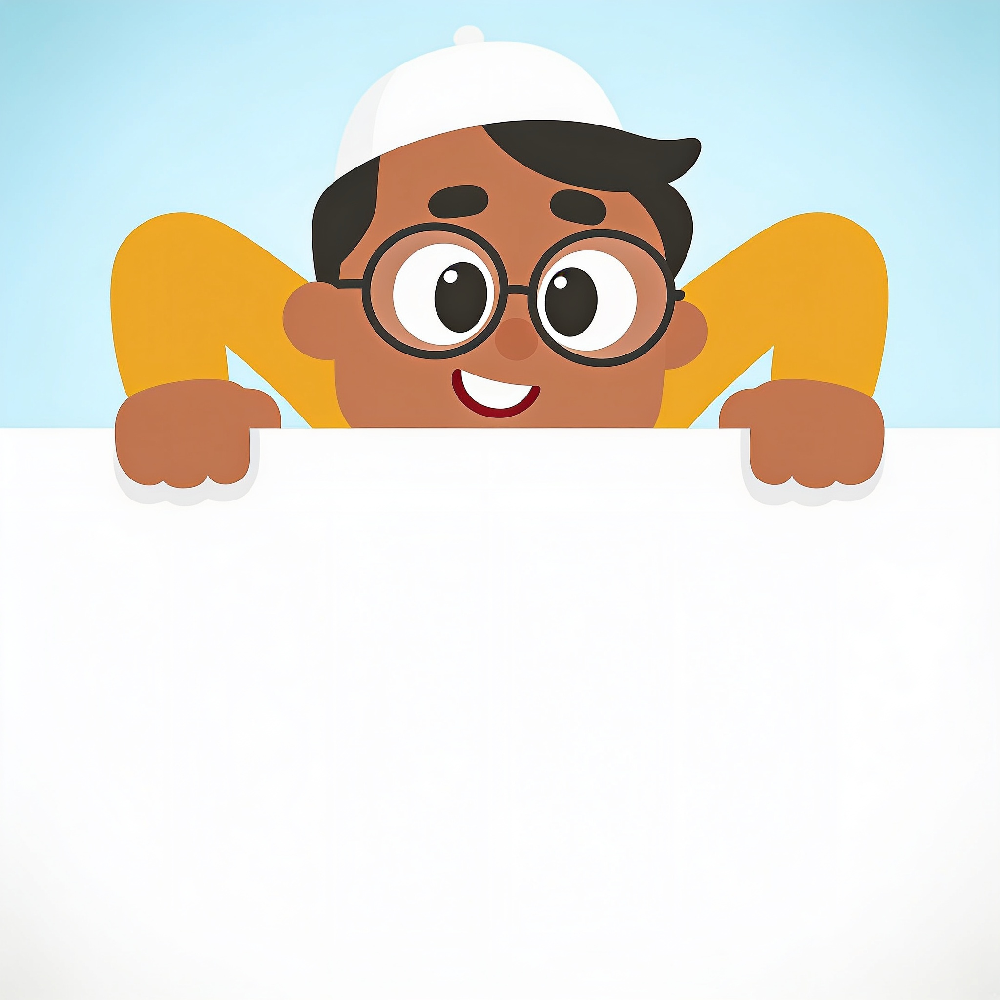

C1 · Hang-off wordmark — hero/marketing

Tahir's List
Tahir grips the top edge of the logo — playful, memorable, hero-section scale.
C2 · App-icon lockup — headers, favicon, app
Tahir's List
find halal food
Compact head icon (works down to 16px favicon) + wordmark + tagline.
C3 · Wordmark-only — footer, legal, small spaces
Tahir's List
Just the type, red apostrophe as the accent. Scales anywhere.
C1 variant · On dark (footer band, extension)
Tahir's List
Ink-on-paper inversion; soft red keeps AA contrast.